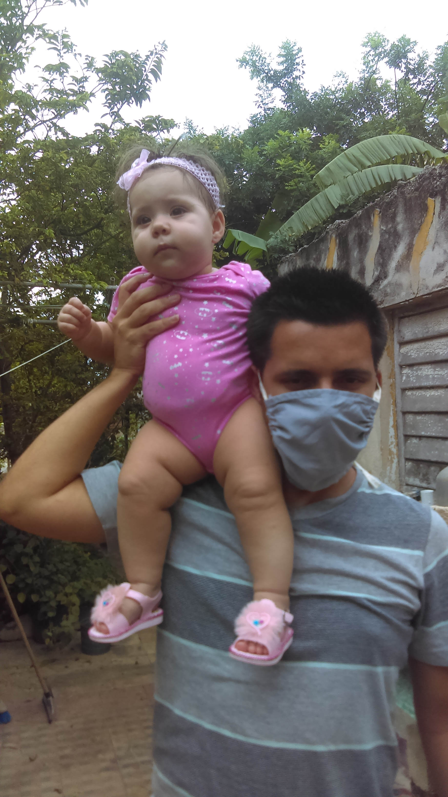

Mas de 8 años trabajando en el Control de la Calidad.
Educacion
- Ingeniero Boimedico
- 2008-2013. Universidad Tecnologica de La Habana

Experiencia Profesional
- Especialista en Gestion de la Calidad
- 2013-2016. Laboratorio Nacional de Control. CECMED
- 2016-2018. Evaluacion de Equiposy Dispositivos Medicos. CECMED
- Tecnologo de la Salud
- 2018-act. Radiofisica Medica. CECMED
Titulos y/o Certificados
- Auditor Interno
- 2016. Centro de Gestion y Desarrollo de la Calidad. La Habana.
Otros
- Graduado de la Escuela de Idiomas Tamara Bunke (Ingles)
- Analisis de Normas Tecnicas
- Uso de Sistemas de Resonancia Magnetica (MRI)
- Gestion de Redes Sociales
Mis Redes Sociales
-
-
- Uso de Sistemas de Resonancia Magnetica (MRI)
- Gestion de Redes Sociales